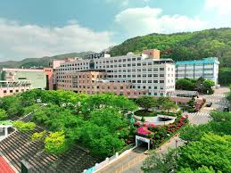

SCROLL
MAIN EVENT
9.19
(토)
학술대회
시간
09:00 ~ 17:00
장소
대전보건대학교 8동 4층 대강당 (대전광역시 동구 충정로 21)
포스터 및 구두발표
우수 학위논문
캡스톤 디자인
대학원생 워크숍
보수교육
명사초청 특강
Core Values
「경계를 넘어서는 작업치료」
Practice
실천
Research
연구
Education
교육
Community
지역사회
제34회 대한작업치료학회 학술대회
당일 프로그램
메인 학술대회(9.19) 당일 프로그램 안내
보수교육
4학점 인정
10:00 ~ 13:00
AI와 함께 하는 작업치료 임상과 전문역량
1
AI 시대, 작업치료사에게 필요한 역량과 준비
이혜진 교수 · 춘해보건대학교 작업치료과
2
Occupation Flow : 참여 중심 작업치료를 위한 AI Workflow 설계
함형광 팀장 · 푸르메재단 넥슨어린이재활병원
명사초청 특강
14:20 ~ 15:20

👤
사진 교체
AI와 돌봄
홍영일 대표 (박사)
서울대학교 대학원 교육학과 교육공학 박사
재미와의미연구소 대표
재미와의미연구소 대표
대학원생 워크숍
10:00 ~ 13:00
✦
Next OT 톡톡 2026: Our Story & Study: Being & Doing
장정열 · facilitator · 약 50인 정원
Lecture Schedule
강의 일정
총 5개 강좌 · 각 4학점 인정 | 온라인 강좌부터 아동·성인 분야별 전문 강의까지
9.12 (토)
온라인 강좌
보수교육 4학점 인정
오후 14:00 ~ 18:00 (4h) · 100인 정원
성인 발달장애인 지원사업의 이해와 실제
1박정은 · 대전발달장애인지원센터 센터장
2권성애 · 동남보건대학교 아동발달지원센터
3강은선 · 이음감각통합발달센터
4김시현 · 여울목 시설장
온라인 (실시간 · Zoom)
교육 신청하기
1) 성인 발달장애인 주간활동 서비스와 최중증 발달장애인 통합돌봄 사업
박정은 · 대전발달장애인지원센터 센터장
2) 최중증 발달장애 전문인력 양성과 맞춤형 돌봄 지원
권성애 · 동남보건대학교 아동발달지원센터
3) 장애인 스포츠바우처 사업과 신체활동 참여지원
강은선 · 이음감각통합발달센터
4) 지역사회 투자 서비스를 통한 성인 발달장애인 지원
김시현 · 여울목 시설장
9.13 (일) 오전
오프라인 강좌
보수교육 4학점 인정
09:00 ~ 13:00 (4h)
아동 작업치료에서의 치료적 상호작용 전략: 참여 촉진을 위한 임상 적용
1박지훈 · 어울림아동발달연구소
2유애리 · 시소감각통합상담연구소
3정희진 · 마미정감각통합상담연구소
4조혜진 · 어바웃차일드
국립정신건강센터 지하1층 어울림홀 (서울)
교육 신청하기
서울특별시 광진구 용마산로 127
아동 작업치료에서의 치료적 상호작용 전략: 참여 촉진을 위한 임상 적용
- 아이의 참여 상태, 비언어적 신호 알아차리기, 집중적 상호작용
- 치료사의 행동 조율하기 (태도, 정서, 모방)
- 공동 활동 루틴 구성과 놀이 확장
- 치료사의 언어적 비계와 감각 사회적 루틴 형성
박지훈 · 유애리 · 정희진 · 조혜진
9.13 (일) 오후
오프라인 강좌
보수교육 4학점 인정
14:00 ~ 18:00 (4h)
아동 작업치료의 실천 접근: 관계 형성을 위한 플로어 타임과 참여 촉진을 위한 OPC
1정미양 · 한국아동신경발달연구소 소장
2주유미 교수 · 가천대학교
국립정신건강센터 지하1층 어울림홀 (서울)
교육 신청하기
서울특별시 광진구 용마산로 127
아동 작업치료의 실천 접근: 관계 형성을 위한 플로어 타임과 참여 촉진을 위한 OPC
- 1) DIR / Floor time의 개념과 임상 적용 (2h)
- 2) 작업 가능화를 위한 OPC 접근 기반 부모상담 및 치료적 코칭 (2h)
정미양 · 주유미
9.20 (일) 오전
오프라인 강좌
보수교육 4학점 인정
09:00 ~ 13:00 (4h)
회복기 재활에서 재택의료까지: 지역사회 복귀를 위한 재활의료 전달체계
1박요안 · 회복기 재활의료기관
2박예슬 · 연세송내과 재택의료센터
국립정신건강센터 지하1층 어울림홀 (서울)
교육 신청하기
서울특별시 광진구 용마산로 127
회복기 재활에서 재택의료까지: 지역사회 복귀를 위한 재활의료 전달체계
- 1) 회복기 재활의료기관 재택의료 시범사례 (2h)
- 지역사회 기반 작업치료의 이해
- 회복기 재활의료기관의 방문 및 원격재활 적용사례
- 2) 장기요양 재택의료 시범사업 사례 (2h)
- 방문재활 국내/외 현황, 법안
- 장기요양 재택의료센터에서 방문재활 적용 사례
박요안 · 박예슬
9.20 (일) 오후
오프라인 강좌
보수교육 4학점 인정
14:00 ~ 18:00 (4h)
지역사회 통합돌봄과 작업치료: 지역별 사업모델과 실천사례
1김영훈 · 아주대학교 요양병원
2유지애 · 청주성모병원
3황호성 · 건양대학교
4이영오 · 수연복지재단 수연24시 어린이집
국립정신건강센터 지하1층 어울림홀 (서울)
교육 신청하기
서울특별시 광진구 용마산로 127
지역사회 통합돌봄과 작업치료: 지역별 사업모델과 실천사례
- 부평형 낙상예방 작업치료 사업: 현장 중심 운영과 변화
- 대전 통합돌봄 체계에서 재가 노인·장애인 맞춤형 방문재활 전략
- 광주다움 통합돌봄 시스템에서의 작업치료 실천
- 부산형 통합돌봄 방문운동 사업의 운영과 실제
김영훈 · 유지애 · 황호성 · 이영오
Conference Themes
2026 핵심 테마
AI와 통합기술이 만드는 따뜻한 돌봄의 미래
AI와 함께하는 작업치료임상 현장을 변화시키는 AI의 실제적 적용
Occupation Flow참여 중심 작업치료를 위한 AI Workflow
Next OT 톡톡 2026미래를 여는 연구, 작업치료의 새로운 지평

images/venue.jpg'">